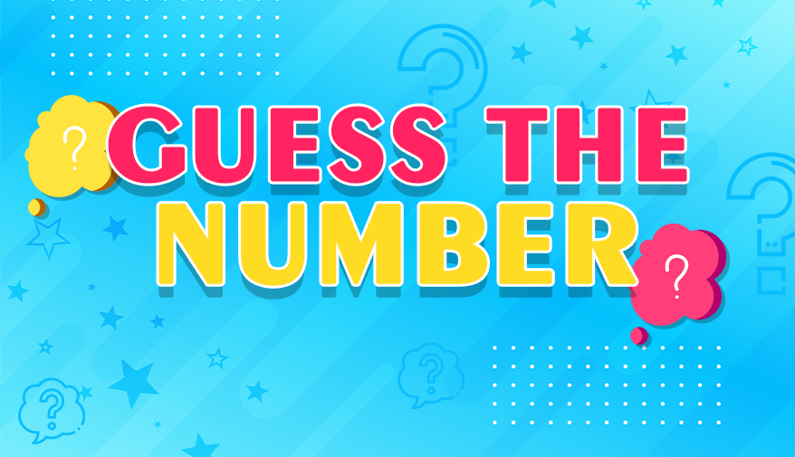

Number Guessing Game
A browser game where the computer picks a secret number and gives higher or lower hints until you find it.
HTMLCSSJavaScript

Why I built it
This is one of the earlier JavaScript projects in my portfolio. The goal was simple: connect user input to program logic and show a result on the page.
What it does
- The computer picks a random secret number
- Each guess gets a too-high or too-low hint
- An attempts counter
- Input validation for empty or out-of-range guesses
- A restart option
How it works
Picking the number. Math.random() returns a decimal between 0 and 1, so it has to be scaled and rounded to produce a whole number in the right range.
const secret = Math.floor(Math.random() * 100) + 1; // 1 to 100
function checkGuess(guess) {
if (Number.isNaN(guess) || guess < 1 || guess > 100) return "Enter a number from 1 to 100";
if (guess > secret) return "Too high";
if (guess < secret) return "Too low";
return "Correct!";
}Reading input safely. Values from an input box arrive as text. They are converted with Number() and checked before they are compared.
Updating the page. The result message and attempt count are written to the page after each guess, and the game state resets when the player starts over.
Screenshots

Technical lessons
- Never trust input. Empty values, letters and out-of-range numbers all had to be handled.
- Off-by-one errors are real. Making the random range include both 1 and 100 takes a deliberate formula.
- There is an optimal strategy. Guessing the middle of the remaining range each time is binary search, and it guarantees finding a number from 1 to 100 in at most 7 guesses.
What I would improve next
- Add difficulty levels with different ranges and a limited number of attempts
- Keep a best-score record in localStorage